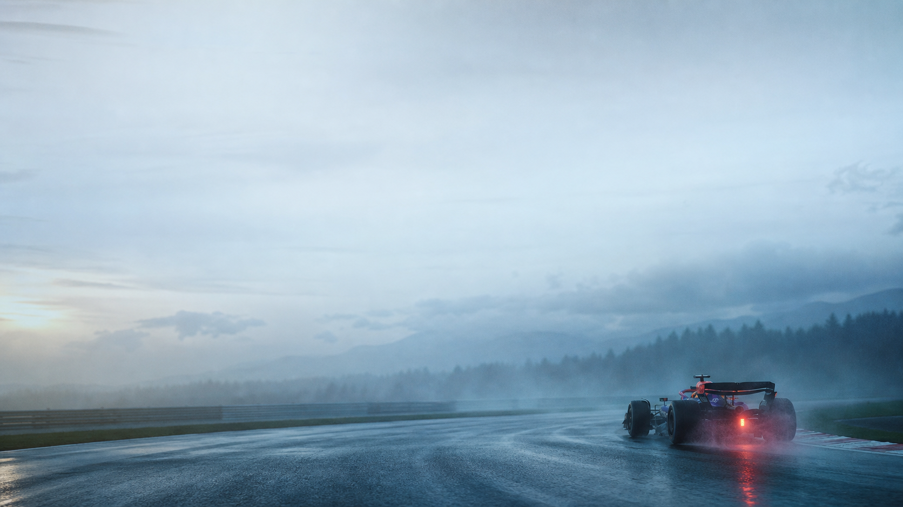

private documentary / 01
把关键回合
之外的事，写下来。
白天写系统，夜里记录还没整理好的念头。这里有工程、生活，以及我在速度、弧线与瞄准之间学会的耐心。
APEXWET TRACK / QUIET MIND
30
featured note / release
不是每一次出手，
都要立刻知道答案。
有些文章像库里的出手：看起来轻，却来自无数次不被观看的练习。写作也是——先把动作做完整，再把结果交给时间。
READ FEATURED NOTE →recent notes
工程里的慢思考，和不写进 commit message 的部分。
关于“够用就好”这件事，我用了七年才真正学会
#生活方式为什么我开始觉得，留白本身就是一种信息
#设计把整套笔记系统换成了一个 txt 文件和一支铅笔
#工具archive / hold the angle
有些判断，
需要先站稳位置。
我偏爱步枪手的耐心：不追求每一秒的高光，先把该守的角度守好。文章归档也一样，先回看，再决定下一步要写什么。
NIKO / M0NESY / FOCUS MODE
F1 / 33MAX VERSTAPPEN
NBA / 30STEPHEN CURRY
CS / RIFLERNIKO
CS / AWPM0NESY